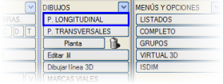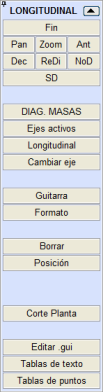BOYKESİT menüsünden boykesit paftalarının oluşturulmasına yönelik menüye erişilir.
Bu menü, arazi boykesiti ve düşey kurplarıyla birlikte kırmızı kotu içeren paftaların oluşturulmasını sağlar.
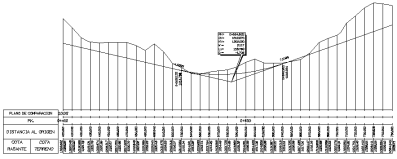
Ayrıca, genellikle alt kısımdaki birkaç bantta, kotlar, KM'ler vb. sayısal değerler de gösterilir. Bu çizim, kullanıcının önceden belirlediği verilerin ve herhangi bir eksenin aliyman, dever, toprak işleri, duvar vb. diyagramlarının gösterildiği bir pota (bilgi bandı) oluşturur.
Yüklediğimiz .gui dosyasının adı, eksen numarasının altında etiketlenir. Bu etiketleme, enkesitlerin soluna konumlandırılır.
Kütüphanede gelen farklı .gui dosyalarının bir kataloğuna BURADAN erişebilirsiniz.
Menüye girildiğinde, proje tablosunda beyan edilen dosyalarla mevcut eksenin verileri güncellenir. Aşağıda yan menünün seçenekleri açıklanmaktadır:
| [Boykesit] |
.gui şablon/dosyasında önceden tanımlanmış deseni ve aşağıdaki açılır pencerede girilmesi gereken bir dizi veriyi izleyerek, mevcut eksenin boykesit paftalarını ekranda oluşturmayı sağlar:
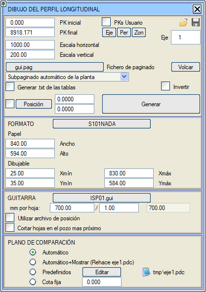
- Gösterilecek kesimin başlangıç ve bitiş KM'leri: Tek bir eksenin çizimi için bu KM'lerin seçimi için üç seçenek sunulur:
[Eksen] Plan ekseninin başlangıç ve bitiş KM'leri.
[Enk] Arazi enkesitlerinin ilk ve son KM'leri.
[Böl] Hesap bölgelerinin KM'leri.
- Paftalama dosyası (.pag) için ad:
Bu dosya, daha sonra YAZDIRMA menüsünün Otomatik Paftalama adlı seçeneğiyle çiziciye paftaları çıkarmak için kullanılacak olan pafta tanımını içerecektir. Bu dosyanın varsayılan adı gui.pag'dır.
- Ayrıca, boykesit çizim iletişim kutusundan sayfaları dökme imkanımız da vardır.
- Alt Sayfalar: paftalamanın her bir sayfasındaki grafik pencerelerin alt bölümlemesi. Aşağıdaki seçenekler arasından seçim yapmak mümkündür:
- Alt sayfa yok: sadece ilişkili sembol/antetin işaretlediği kırpma alanı dikkate alınır.
- Planın otomatik alt paftalanması: Paftalamanın oluşturulması için ISTRAM®/ISPOL®, teorik veri sınırının (yeşil dikdörtgen) üzerinde bir alan arar. Eğer planın otomatik alt paftalanması istenmişse, paftalarda boykesitin üzerinde harita üzerindeki güzergahın ilgili şeridi görünecektir. Kullanımdaki .gui şablonu, yeterli genişlikte bir plan şeridinin sığabileceği kadar yeterli "yukarıda serbest kağıt şeridi" beyan etmelidir (örneğin, ispol7.gui 251 mm'lik bir serbest şeride sahiptir).
- Sayfa başına iki profil: Boykesitin iki bölümüne yer açmak için üst üste iki alan oluşturulur. Alt alt sayfalarda 1-1, 2-1, 3-1,... tek sayılı profiller ve üst alt sayfalarda 1-2, 2-2, 3-2,... çift sayılı profiller çizilecektir. Bir önceki gibi, kullanımda olan .gui şablonu, bir boykesit şeridi ve ilişkili potasının sığabileceği kadar yeterli "yukarıda serbest kağıt şeridi" beyan etmelidir.
- Tabloların .txt dosyasını oluştur:
Bu kutucuk işaretlendiğinde, seçilen potanın komutlarına göre ekrana çizim yapmanın yanı sıra, kullanılan .gui şablonunun [KURP GEOMETRİSİ] bölümünde seçilen seçeneklere göre ekranda gösterilen bilgilerin saklandığı, eksen başına Boykesit_eksen_#.txt (# eksen numarasıdır) adında bir dosya da oluşturulur.
- Ters Çevir: Boykesit çizimini ters çevirir, bu da ilgili paftalamayı oluşturur.
- Konum.
Bu düğmeye basıldığında, boykesit çiziminin başlangıç noktasının belirleneceği nokta ekrandan seçilebilir. Bu noktanın dikkate alınması için Konum kutucuğunun işaretlenmesi gerekir, aksi takdirde varsayılan konum atanır. Bu seçenek, Boykesit Seçenekleri menüsündeki Profiller arası ayırma faktörü adlı kutucuklarla ilgilidir.
- Format: Boykesit çizilirken, yüklenen şablondan bağımsız olarak sayfa başına milimetre cinsinden uzunluk seçilebilir. İki kutucuk vardır, böylece kesirli bir sayı olarak tanımlanabilir (örn: 2500 / 3.75). Ayrıca, seçilen formattan bağımsız olarak çizilebilir genişlik ve yükseklik de seçilebilir. Sayfa başına mm cinsinden uzunluk değiştirildiğinde, seçilen formattan bağımsız olarak çizimin yapılabilmesi için Maks. X çizilebilir ve kağıt genişliği değerleri otomatik olarak değişir.
Bu boykesit çizim iletişim kutusundan, seçilen format ve pota da değiştirilebilir.
- Sayfaları en yakın bacada kes:
Sayfa başına verilen uzunluk değeri maksimum değer olarak alınır ve sayfa değişikliği bu değer içinde bulunan son bacada yapılır.
- Karşılaştırma düzlemi: Karşılaştırma düzlemi birkaç farklı şekilde belirlenebilir:
- Otomatik: Her sayfa için karşılaştırma düzlemi, .gui şablonunda tanımlanan parametrelere göre hesaplanır. Eğer önceden bir tmp\eksenN.pdc dosyası varsa, onu kullanmaz veya değiştirmez.
- Otomatik + Göster: Bir tmp\eksenN.pdc dosyasını yeniden yapar veya oluşturur ve gösterir. Eğer önceden var olan bir dosyayı değiştirmek isteniyorsa, bu seçenek kullanılmamalıdır.
- Öntanımlı: Her sayfa için karşılaştırma düzlemlerinin kotları tmp\eksenN.pdc dosyasından okunur. Düzenle düğmesine tıklandığında .pdc dosyasının verileri gösterilir ve düzenlenmesine izin verilir:
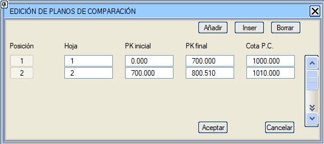
- Sabit Kot: Tüm sayfalar için aynı kot tanımlanır.
[Oluştur] düğmesine basıldıktan sonra ISTRAM®/ISPOL®, boykesit sayfalarını ekranda oluşturur. Bu profiller, programın tüm seçenekleriyle tamamen düzenlenebilir ve herhangi bir çizim gibi .edm/.edb dosyalarında arşivlenebilir.
|
| [Sil] |
Bu menüye girildiğinden beri oluşturulan tüm grafik nesneleri siler.
|
| [Konum] |
Yeşil dikdörtgen içine dahil olmayan bir bant doluysa, profillerle dolu bant sayısını sorar. Bildirilen kadarını dikkate alır ve bir sonrakine çizer. Her bant, mevcut formata uygun bir yükseklikle hesaplanır.
|
[Eksen Değiştir]
|
Başka bir eksenin boykesitini çizmek için gerekli verileri yüklemeye ve hesaplamaları yapmaya geçer.
|
[Aktif eksenler]
|
Aktif bir grupta bulunan tüm eksenlerin boykesitlerini aynı anda oluşturmayı sağlar. Eksen numarasının modeli de aktif olmalıdır.
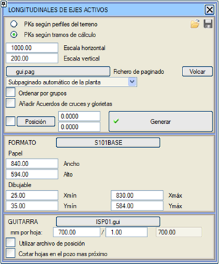
Tüm aktif eksenlerin boykesitleri, her eksenin boykesiti için başlangıç ve bitiş KM'lerinin otomatik seçimi açısından iki kritere göre yapılabilir:
-
Arazi enkesitlerine göre.
- Hesap bölgelerine göre: İlk bölgenin başlangıç KM'sinden son bölgenin sonuna kadar.
İletişim kutusu, Gruplara göre sırala seçeneği ile eksenleri gruplara göre sıralama imkanı sunar. Ayrıca kavşak ve dönel kavşak kollarını ekleme seçeneği de sunulur.
|
[Pota]
|
Kütüphanede mevcut olanlar arasından bir boykesit şablonu seçilmesini ister. Başka bir şablonla değiştirilene kadar, geçerli şablon, kütüphanede seçilen son potanın ispol.gui adı altında bir kopyası olacaktır. |
[Format]
|
Bir paftalama formatı seçildikten sonra, bu seçenekle başka bir formatla değiştirilene kadar kullanımda kalır.
Genel olarak, süreç önce kullanılacak kağıt formatını bilmeyi gerektirir; bu formatın, gösterilecek eksen uzunluğunun belirtimiyle uyumlu boyutlara sahip olması gerekir.
Planın otomatik alt paftalaması kullanılacağında (plan ve boykesit aynı fiziksel sayfada yer alacak), kabul edilebilir bir sonuç elde etmenin mümkün olduğu formatlar ve potalar kullanılmalıdır.
|
[Plan Kesimi]
|
Boykesit çiziminin sayfalara (örneğin 700 m'lik) paftalanması gibi, bu seçenek de plan üzerinde, mevcut eksenin paftalamasına karşılık gelen uzunluktaki kesimlerde kırpma için poligonlar oluşturur. Böylece, bu alanları kopyalayarak her boykesiti kendisine karşılık gelen plan parçasıyla birleştirmek veya doğrudan çerçevelenmiş harita parçalarını çizim dosyalarına ( .edm/ .edb, .dwg/ .dxf, vb.) dışa aktarmak mümkündür.
Programın istediği veriler şunlardır:
- Başlangıç ve bitiş KM'leri
- Her sayfadaki eksen uzunluğu
- Ara noktalar arası eşit aralık
- Eksenin yanlarına olan mesafe
Böylece, eksenin tüm planını kaplamak için gereken kadar kapalı poligon oluşturulur ve her sayfa kesiminde eksene dik kesimler işaretlenir.

|
Eğer BOYKESİT iletişim kutusunda Planın otomatik alt paftalanması seçeneği etkinleştirilmişse, bu seçeneği gerçekleştirmek artık gerekli DEĞİLDİR, çünkü paftayı oluştururken program, harita üzerindeki konumunun bilgisini kopyalar ve boykesitin üzerine bir pencereye yapıştırır. |
|
Kütleler diyagramı için veri hazırlama
[KÜTLELER DİY.] düğmesi, gösteren bir boykesit çizmeden önce mevcut eksenin kütleler diyagramını veya birleşik kütleler diyagramını işlemek için bir menü açar. Bu diyagram, mantıksal olarak, yalnızca ilişkili .gui şablonunun ilgili seçenekleri etkinse çizilecektir.
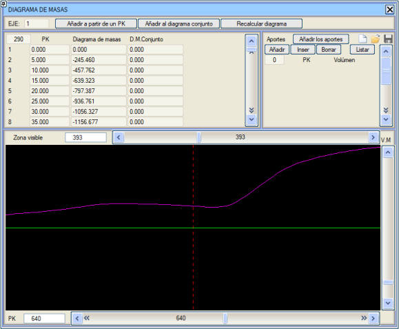
Diyagramı KM'lere göre kaydırmak için, diyagramın altındaki yatay kaydırıcıyı kullanmak veya ana düğme basılıyken fareyi diyagram üzerinde sürüklemek yeterlidir.
Bir girdi tablosu (km,hacim) ekleme imkanı bulunmaktadır. Bu tablo .tda dosyalarında saklanabilir ve ayrıca eksenin .vol dosyasıyla da saklanır. Girdileri ekle seçeneği ile tablonun verileri, kütleler diyagramına ve eğer hacimleri yansıtmak için beyan edilen eksendeysek birleşik diyagrama da dahil edilir.
Diyagramı yeniden hesapla seçeneği, kütleler diyagramını girdiler olmadan yeniden oluşturur. Eğer hacimleri yansıtmak için kullanılan eksendeysek ve proje hesaplanmışsa, Diyagramı yeniden hesapla seçeneği birleşik diyagramı da yeniden oluşturur.
Metin tabloları
Bu tablolar, her bir paftada sabit bir bilgi vermek için tasarlanmıştır. Şablonların interaktif düzenleyicisinden, boykesit potasının farklı bölgelerinde bilgi etiketlemek için bu tabloların sayfa içindeki konumunu tanımlamak mümkündür.
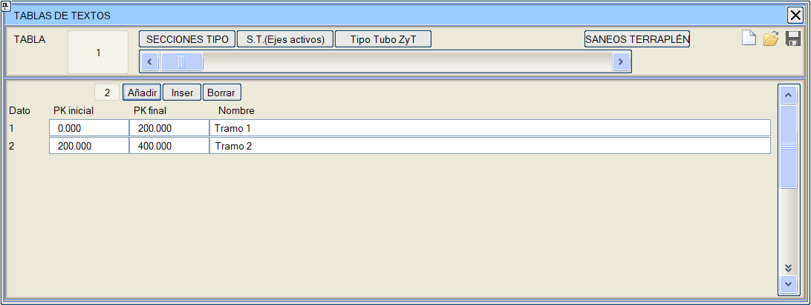
Bilgileri .vol dosyasında saklanan on adede kadar bağımsız tablo tanımlanabilir. Her tabloda, başlangıç KM'si, bitiş KM'si ve bir metin içeren sınırsız sayıda kesim oluşturmak mümkündür.
[TİP KESİTLER] seçeneği, hesap bölgelerinin sıralı KM'lerine göre tip kesit adlarıyla otomatik olarak bir tablo oluşturur. Bu, her kesimde uygulanan tip kesit adlarını boykesitte etiketlemeyi sağlar.
[T.K. (Aktif Eksenler)] seçeneği, tüm aktif eksenler için hesap bölgelerine göre tip kesitleri yükler ve ilgili .vol dosyalarına kaydeder.
[DOLGU İYİLEŞTİRMELERİ] seçeneği, Dolgu İyileştirmeleri menüsünde tanımlanan farklı verilerin açıklama adlarıyla otomatik olarak bir tablo oluşturur.
Nokta tabloları
Buradan, her eksenle ilişkili ve .vol dosyasında saklanacak birkaç nokta tablosu tanımlamak mümkündür. Bir tablonun her verisi şunları içerir:
- Eksen KM'si
- Sembol tipi
- Kot, şu olabilir:
- Araziye göreceli
- Mutlak
- Sağ kırmızı kota göreceli
- Sol kırmızı kota göreceli
- Eksene mesafe
- İlişkili metin
- Bir .top/.toc'tan yüklenen noktalar için X,Y Koordinatları
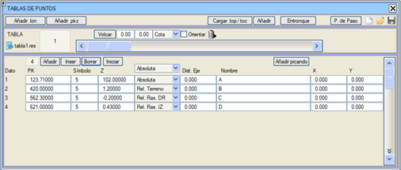
[Dök] seçeneği, tüm sembolleri plan üzerine yerleştirir. Ayrıca, mevcut metin tipini, boyutunu ve hizalamasını kullanarak her noktanın adını da döker. Metnin konumunu kaydırmak için dx/dy değerleri veya yönlendirme durumunda eksene ve KM'ye olan mesafe tanımlamayı sağlar. Noktaları dökerken, noktaya aktarılan öznitelik seçilebilir: kot, km veya kazık. Uygun bir sembol tipi seçilmelidir, örneğin kazık için S757. Eğer Yönlendir bayrağı etkinleştirilirse, semboller ve isimli metinler eksenin azimutuyla yönlendirilir. Dökülen noktaları  simgesiyle silmek mümkündür. Bu seçenek sadece Boykesit'in sabit menüsünden kullanılabilir. Kırmızı Kot menüsünden kullanılamaz, çünkü bu seçenek sembolleri veya metinleri plana dökmek için kullanılır. simgesiyle silmek mümkündür. Bu seçenek sadece Boykesit'in sabit menüsünden kullanılabilir. Kırmızı Kot menüsünden kullanılamaz, çünkü bu seçenek sembolleri veya metinleri plana dökmek için kullanılır.
 .top/.toc dosyalarından nokta yüklemesi yapmak mümkündür. Bu durumda ve [.top/.toc Yükle] düğmesine tıklandıktan sonra, bir noktanın dikkate alınması için eksene olan maksimum mesafenin, noktaların dikkate alınacağı başlangıç ve bitiş KM'lerinin ve bu noktalara atanacak sembol tipinin belirtilmesi gereken bir iletişim kutusu gösterilir. Eğer Z sütunundan sonra gözlemler, kodlar veya komutlar içeren bir .toc dosyası ise, bu metinler tablodaki noktanın adı olur. Aksi takdirde, noktanın adı dosyadaki nokta numarası ve eksene dik mesafeden oluşur. Bu tür dosyalardan noktalar yüklenirken, orijinal x, y koordinatları nokta tablosuna eklenir. .top/.toc dosyalarından nokta yüklemesi yapmak mümkündür. Bu durumda ve [.top/.toc Yükle] düğmesine tıklandıktan sonra, bir noktanın dikkate alınması için eksene olan maksimum mesafenin, noktaların dikkate alınacağı başlangıç ve bitiş KM'lerinin ve bu noktalara atanacak sembol tipinin belirtilmesi gereken bir iletişim kutusu gösterilir. Eğer Z sütunundan sonra gözlemler, kodlar veya komutlar içeren bir .toc dosyası ise, bu metinler tablodaki noktanın adı olur. Aksi takdirde, noktanın adı dosyadaki nokta numarası ve eksene dik mesafeden oluşur. Bu tür dosyalardan noktalar yüklenirken, orijinal x, y koordinatları nokta tablosuna eklenir.
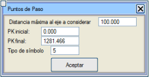[G. Noktaları] (Geçiş Noktaları) düğmesi ile, boykesite eklenmiş olası geçiş noktalarını, eksenden belirli bir maksimum mesafeden daha fazla ayrılmayan ve belirli bir başlangıç ve bitiş KM'leri arasında bulunan noktaları tabloya eklemek mümkündür. Nokta tablosuna aktarılacak sembol tipi, müşteri tarafından Sembol tipi kutusunda belirlenecektir.
Bu iletişim kutusu ayrıca, [Kavşak] düğmesine basarak kavşakların ABCDE noktalarını nokta tablosuna yükleme imkanı da sunar.
Not defteri simgesine tıklandığında, nokta numarası, KM, kot, eksene mesafe, kot-arazi kotu, kot-kırmızı kot ve ad içeren mevcut tabloyla bir liste oluşturulabilir.
Bu semboller, ilişkili metinleri, KM'leri ve kotları, boykesitte ya profil üzerinde ya da pota üzerinde çizilebilir ve ayrıca kırmızı kot menüsünde de görüntülenebilir.
Boru hattı projeleri durumunda, plandaki dirsekleri nokta tablosuna yükleme imkanımız vardır. Kırmızı kota göreceli 0.0 kotuyla yüklenirler. Daha sonra kırmızı kot tasarımı için bu dirseklere bağlanmak mümkündür.
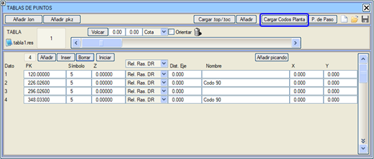
Kırmızı Kotlar > Araçlar > Nokta Tablosu menüsünden: Bir .lon veya .pkz dosyasının verilerini nokta tablosuna ekleme imkanı.
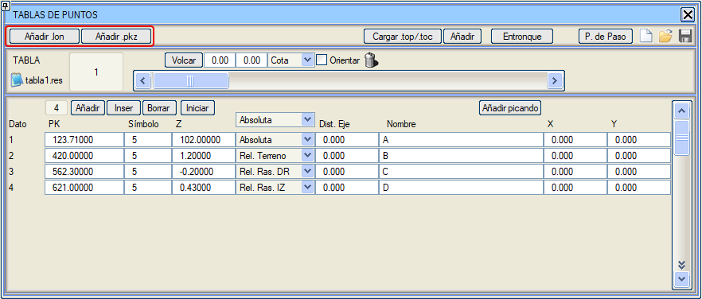
|